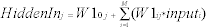
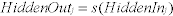
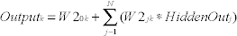

DeltaV Neural
DeltaV Neural is a collection of tools you use to implement neural networks in the DeltaV environment. With DeltaV Neural, you can create virtual sensors to monitor and predict process parameters that are otherwise expensive, difficult, or impossible to measure directly. Neural networks are sometimes referred to as intelligent or software sensors.
Hard-to-measure variables are usually quality variables or variables directly related to the economic interest of the production. These variables are often measured by gathering product samples periodically and analyzing them offline in a laboratory. The obvious time delay incurred in analyzing the test samples, which can be as much as several hours, makes timely control adjustments difficult. The product may become out of specification, and this may be undiscovered until the next sample is analyzed.
DeltaV Neural consists of the following tools:
- Neural Network (NN) function block, which implements software sensors.
- Lab_Entry (LE) function block, which accepts lab sample analysis for training and continuous update of a neural network.
- Neural application for training the neural network using historical process data.
- NN and Lab Entry dynamos to create displays that operators use to enter lab data and view the virtual sensor's current and future output value.
- NN and Lab Entry Faceplates
- NN and Lab Entry Detail Displays
This chapter discusses the algorithm that creates and trains the neural network that the NN function block uses and describes the functionality provided by the Neural Network function block and the Lab Entry function block. The manner in which the Neural application identifies the upstream measurements that impact the measurement obtained by lab analysis or online sampled analyzers is also discussed. In addition, there is an overview of the predefined functionality provided in DeltaV Operate to interact with the NN function block. The Neural Network function block can be used to provide a continuous estimate of a measurement that is available only through analysis of grab samples. It can also, in conjunction with a sampled analyzer, predict the measurement and detect when the estimated and sampled values differ significantly. The NN function block is contained in the Advanced Control palette. You configure and download this function block in the same way as other DeltaV control blocks. The Lab Entry function block is also part of the Advanced Control palette. You can use it to enter the lab analysis of the measurement that is estimated by the neural network function block.
With DeltaV Neural, you can collect data on your process and lab analysis by downloading the module containing the NN function block and the LE function block. The Neural application uses data collected by the Continuous Historian during normal operation to determine the sensitivity of the lab analysis to upstream inputs. The application then uses historical data of inputs that have a significant impact to train the neural network to predict the sampled value. You can evaluate the accuracy of the model using the tools included with the Neural application. DeltaV Neural generates a network matrix for the NN function block from the verified model. DeltaV Operate includes dynamos you can use to create a neural network operator interface.
After you generate the trained neural network using the DeltaV Neural application, you can download the module containing the NN function block with the updated neural network matrix into a DeltaV controller. Through the dynamos provided for a neural network operator interface, you can place the neural network into operation and allow it to be updated using new lab samples. If the diagnostics associated with the NN function block indicate that the process has significantly changed, you can easily retrain the neural network and download it to the NN function block.
DeltaV Neural Algorithm
This section presents the technical background and implementation of the neural network (NN) as implemented in DeltaV Neural. The DeltaV Neural application uses a multilayered feedforward neural network architecture that is trained with the error back propagation algorithm. Compared to traditional neural network products, DeltaV Neural contains many advanced features, such as:
- sensitivity analysis of upstream measurements
- automatic estimation of the delay in the response to a change in process input
- automatic network update based on analyzer or lab entry of new sample values and estimation of future value of the measurement based on current upstream conditions
- diagnostics to detect deviation in estimate from new sample values.
The accuracy of the measurement estimate is substantially improved as a result of these enhancements. Understanding the details of the neural network algorithm is not necessary to successfully use the DeltaV Neural product. Unless you have an interest in how the neural network algorithm and training are implemented in DeltaV Neural, skip to the Using DeltaV Neural topic.
The NN function block uses a feedforward neural network structure. Training of the neural network is performed using backward propagation. The neural network is validated by comparing the project output and the lab or analyzer data. Adaption of the neural network is based on comparison of predicted measurement value to the real sampled value. The neural network algorithm is embedded in the DeltaV controller as a function block and is supported by DeltaV Neural.
Neural networks (or artificial neural networks), as implemented in DeltaV Neural, are structured to mimic the operation of the neurons in the human brain. The pulse inputs to the artificial neurons are weighted (that is, some impulses are stronger than others). The weighted inputs are summed and the neuron fires (that is, it sends an output) if the sum of the weighted inputs is equal to or greater than the threshold for the neuron. Artificial neural networks are composed of artificial neurons that process weighted input values with a transfer function to determine the output value of the neuron. This subsection provides the general theory of artificial neural networks. An artificial neuron (or node) handles three basic functions. It must:
Artificial Neural Networks
Neural networks (or artificial neural networks), as implemented in DeltaV Neural, are structured to mimic the operation of the neurons in the human brain. The pulse inputs to the artificial neurons are weighted (that is, some impulses are stronger than others). The weighted inputs are summed and the neuron fires (that is, it sends an output) if the sum of the weighted inputs is equal to or greater than the threshold for the neuron. Artificial neural networks are composed of artificial neurons that process weighted input values with a transfer function to determine the output value of the neuron. This subsection provides the general theory of artificial neural networks. An artificial neuron (or node) handles three basic functions. It must:
- evaluate the inputs, applying the weighting factor to each one
- calculate a total for the combined inputs and compare that to some threshold level
- determine what the output should be
The following figure shows a single artificial neuron.
Each artificial neuron can have multiple inputs, all of which are received simultaneously. Each input to a neuron has a weight value (Wij), which determines the relative impact of that input. (The initial weight for a neuron will change according to its rules for modification and as the network learns from various inputs.)
Several important activities take place within the artificial neuron. Each input signal is multiplied by a weight, and the results are summed with a constant bias input, which resembles the threshold in a natural neuron. This sum is then passed to a transfer function. If the sum of the inputs is greater than zero, the neuron generates an excitatory (positive) signal. If the sum of the inputs is less than zero, an inhibitory (negative) signal is generated. Both response types are significant.
The transfer function is generally nonlinear. Linear (straight line) functions are sometimes used in combination with nonlinear transfer functions. Often, the transfer function of choice is a sigmoid (an S-shaped curve), as shown in the following figure. The curve approaches a minimum and maximum value at the asymptotes. Mathematically, this function is convenient because its derivatives are easy to calculate.
The output (Yj) of an artificial neuron is the input to one or more other neurons. An individual artificial neuron by itself is not useful. Only when combined with other neurons in a neural network does it become useful. For example, the human brain includes a hundred billion (1011) or so neurons. Typically, each neuron can interact directly with 10,000 others, yielding a total of 1015 connections. Brain power comes from the sheer numbers and multiple connections of so many neurons operating in concert. Artificial neural networks cannot approach this complexity, being subject to limitations on the number of inputs, connections, and outputs, but are powerful tools regardless.
There are many ways to combine artificial neurons to construct a network. One of the most common is to create a multilayer feedforward network (MFN), such as the one shown in the following figure, which is most useful in process industries.
In this case, the neurons form three layers:
It is a feedforward network because, when fully connected, the output of each neuron in a layer acts as an input to all of the neurons in the next layer, with none sending outputs to neurons in their own layer or any previous layers. Given enough hidden neurons, a three-layer feedforward network can represent any continuous nonlinear function to desired accuracy.
The input layer receives information from the outside world. Typically, the input layer consists of one neuron for each measured input variable of the process being modeled. Usually, the neurons in this layer perform no function other than buffering of the input signals. They do not have nonlinear transfer functions but let input information pass through directly to the next layer. Therefore, they are called linear neurons.
The hidden layer processes information from the input layer and sends the results to the output layer. The hidden layer is internal to the network and has no direct contact with the outside world. Hidden neurons usually have sigmoidal transfer functions necessary to capture nonlinear information.
The output layer sends out calculated values as the neural network's output information. Typically, the output layer consists of linear neurons that each collect inputs from all of the neurons in the hidden layer.
Bias neurons are necessary in a feedforward network. They are connected to each neuron, except in the input layer. The bias neurons behave similarly to other neurons in the same layer, except that they do not receive inputs from other neurons. They are constant-source inputs, which provide a value of one (1.0). As is shown in the previous figure, there are many more connecting lines than there are neurons. The neural network multiplies the signals carried by each neuron by weights, which are adjusted during the training and fixed after being trained.
Building a Neural Network
Normally, building a neural network model requires the following tasks:
- Data collection - This operation is essential since process data is the only base for building a neural network. The quality of the data determines the quality of the model.
- Data preprocessing - This operation is necessary because real process data often contains missing values, outliers (data values outside the control limits you set), and possibly undesired data from different sources. This data has to be conditioned or preprocessed before it is used for network training.
- Variable and time delay selection - This operation determines which of the available process variables are important ones that significantly affect the variables to be predicted. Inclusion of irrelevant variables can degrade the prediction accuracy.
- Network training - This operation determines the number of hidden neurons and adjusts the weights based on a well-conditioned set of training data. The network's ability to change the weights allows the network to modify its neurons' behavior in response to their inputs or to learn.
- Network verification - This operation uses a separate set of data to test how well the network works.
Before a neural network can be used for process control, it must be trained. Training, as the word suggests, consists of presenting historical process information to the network and then comparing the network output to a target value and adjusting the network weights to match the network output to the target.
Training a neural network with a specific number of hidden nodes involves the following steps:
- Gather and preprocess historical data and then divide the data into two sets: one set for training and the other set for testing.
- Present the training set of data to the network.
- From the inputs, forward propagate the training data through all layers of the network and, finally, to the outputs.
- Compute the error between the network output and the actual (target) output values.
If they are equal, do nothing. Otherwise, adjust the weights of the neural network according to a training method backward through the network. This step is known as back propagation. One path of forward and backward propagation through all data is one training epoch.
- Present the testing set of data to the network after the weights are adjusted in one epoch.
- From the inputs, propagate the testing signals through all layers of the network and, finally, to the outputs.
- Compute the error between the network output and the actual (target) output values.
If the least test errors are achieved, training is complete. Otherwise, return to step 2.
Training and testing a neural network involves:
The following subsections examine the components of the Neural Net training algorithm and some of the mathematics involved. See the following figure for an example of a simple three-layer neural network.
Feedforward Propagation
Feedforward propagation processes information in a forward direction only. This technique essentially calculates the network output based on given input data values. During this operation, weights on the network's interconnections are not changed or updated.
The following equation relates values from the input layer to each hidden neuron input:

where:
M = Number of input errors
ij = Individual elements of a vector or a matrix
W10j = Input bias weight
W1ij = Input layer weight from the ith input neuron to the jth hidden neuron.
The results of the summation in each hidden neuron then go through a sigmoidal transfer function, s(x), which is:

where:
s(x) = (1 - exp ((-x))/(1 + exp (-x))
exp = Exponential function
The calculated values from the output layer neurons are related to the hidden layer outputs through the following equation:

where:
N = Number of hidden neurons
W20k = Hidden bias weight
W2jk = Output layer weights
Error Back Propagation
Once the network goes through feedforward propagation using an initial set of weights, the software calculates output values and compares them to the output data used as the desired target for the output values. The difference between the calculated values and the target values is known as the error.
Training adjusts the network weights in proportion to this error in order to reduce the difference between the calculated and target values. To correct the network output, the back propagation learning algorithm distributes the output error to each individual weight. First, the program adjusts the output layer weights based on the output error and then the input layer weights. This weight adjustment process is known as error back propagation.
A single implementation of the error back propagation uses the gradient descent method, which always moves toward reducing the training error with a properly assigned learning rate or step size. However, this approach suffers from a number of problems, such as slow convergence and a fixed learning rate.
Instead of the gradient descent method, DeltaV Neural uses a modified algorithm called the conjugate gradient method. This method significantly improves the learning speed and robustness of the network with only a modest increase in the computing memory usage. The conjugate gradient method combines current information about the gradient with that of gradients from the previous iteration to change the weights. The resulting conjugate gradient training is actually adapting the learning rate to the best possible value, which results in much faster training. Another advantage of this algorithm is that you do not need to worry about specifying the learning rate